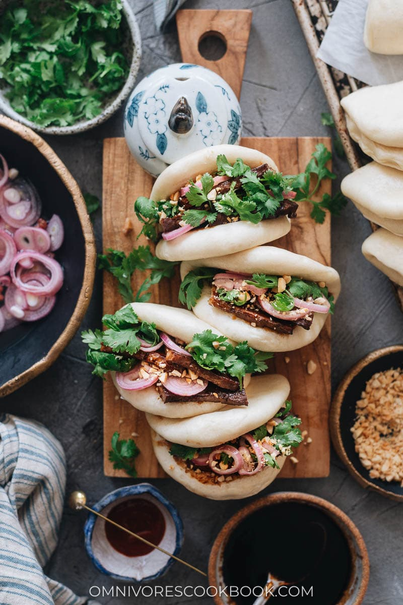

Gua bao recipe

Gua Bao - soft fluffy Bao buns stuffed with tender sticky pork belly.
I'm going to show you how to make it all at home, from scratch, in my easy-to-to-follow step-by-step recipe. After eating this you won't be able to stop thinking about it until the next time you have it. It's a vicious circle that I'm kinda happy about.
Ingredients
Steamed buns:
- 3 ¾ cups (450g) plain (all purpose) flour
- 2 tbsp caster sugar
- ½ tsp salt
- 2 tsp (equivalent to one packet or 7g) instant dried yeast
- 3 tbsp whole milk
- ¾ cup + 2tbsp (210 ml altogether) warm water
- 3 tbsp unsalted butter
- 1 tbsp olive oil
Slow coocked pork belly:
- 2.2 lb (1Kg) rindless pork belly slices chopped in half
- 4 ¼ cups (1 Litre) hot chicken/veg stock
- 1 tbsp minced ginger
- 3 cloves garlic - peeled and chopped in half
- 1 tbsp rice wine
- 1 tbsp caster sugar
Pork belly glaze:
- 2 tbsp vegetable oil
- 1 pinch of salt and pepper
- 1 tbsp minced ginger
- 1 red chilli - finely chopped
- 2 tbsp honey
- 2 tbsp brown sugar
- 3 tbsp dark soy sauce
- 1 tsp lemon grass paste
Gua bao toppings:
- 1 Small bunch coriander (cilantro) - roughly torn
- 2 red chillies - sliced into thin strips
- 4 spring onions (scallions)
- 1 tbsp sesame seeds
- 2 tbsp toasted cashew nuts - chopped
Steps
- Start by making the bao buns.
- Place the flour, sugar, salt and yeast in a bowl and mix together.
- Add the milk, warm water and butter to a jug and stir together until the butter melts. Stir the liquid mixture into the flour mixture at first with a spoon, and then with your hands. Turn out onto a floured surface and knead for 10 minutes. Alternatively, you can do this in a mixer fitted with a dough hook.
- Place the dough in an oiled bowl. Cover (with clingfilm or a damp tea toweand leave to prove until doubled in size - about 90 minutes - 2 hours).
- Meanwhile, start on the pork belly. Add all the slow cooked pork belly ingredients to a pan (not the glaze ingredientI use a cast iron casserole pan. Bring to the boil, then place a lid on, turn down the heat and simmer for 2 hours. Then turn off the heat and drain the pork. You can reserve the liquid if you like (Perfect for a Thai or Chinese noodle soup).
- After the dough has proved, tip it out of the bowl onto a floured surface. Knead the dough again and split into 10 balls. Place a piece of baking parchment on your work surface and roll each ball into an oval on top of the parchment, using a rolling pin - approx. 12cm x 8cm.
- Brush the ovals with the olive oil and fold each oval over, using a chopstick in the middle to fold over to leave a little space in the fold (so the oil is on the inside of the fold). Remove the chopstick.
- Prepare two oven trays by lining each with a piece of baking parchment. Place the buns on the trays - still on the the baking parchment - as this will help you to move them later. Cover each tray with clingfilm or a carrier bag* (see note 1) and leave to prove for a further hour, until puffed up.
- Put a large steamer pan on to boil. Working in batches, place the buns in the steamer (you can keep them on the baking parchmenand steam for 15 minutes. I use this pan - placing two buns in each layer.
- Whilst the bao buns are steaming, you can continue to cook the pork belly. Chop the pork into bite sized chunks. Add 1 tbsp. of the oil to a frying pan, and then mix the remaining glaze ingredients in a small bowl.
- Heat the oil and add in the pork, salt and pepper, frying on a high heat until the pork starts to turn golden. Now pour the glaze over the pork and continue to cook until the pork looks dark and sticky - about 6-7 minutes. Turn off the heat and transfer to a warm bowl until you're ready to assemble the gua bao.
- Once the buns are cooked, open them up and stuff them with sticky pork belly, coriander (cilantro), slices of red chillies, and strips of spring onions. Sprinkle on sesame seeds and chopped cashews.
Back to top
Back to main menu